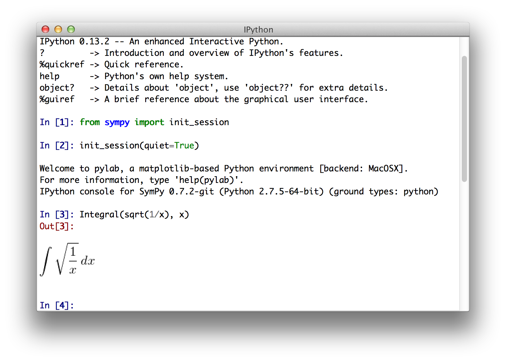
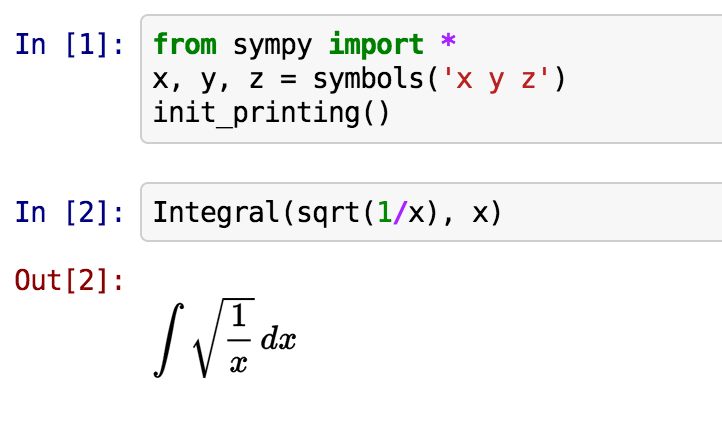
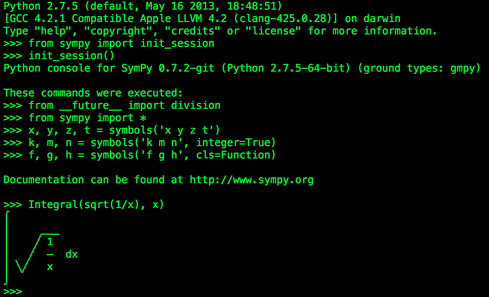
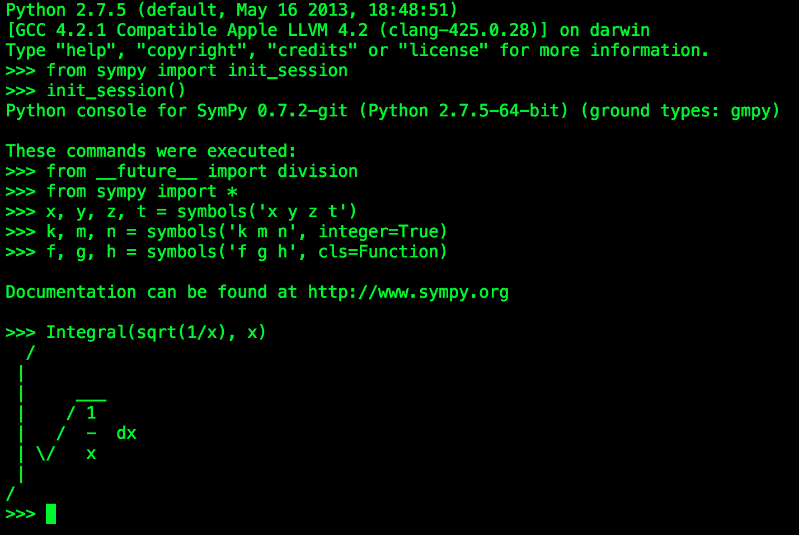

Printing
As we have already seen, SymPy can pretty print its output using Unicode characters. This is a short introduction to the most common printing options available in SymPy.
Printers
There are several printers available in SymPy. The most common ones are
str
srepr
ASCII pretty printer
Unicode pretty printer
LaTeX
MathML
Dot
In addition to these, there are also “printers” that can output SymPy objects to code, such as C, Fortran, Javascript, Theano, and Python. These are not discussed in this tutorial.
Setting up Pretty Printing
If all you want is the best pretty printing, use the init_printing()
function. This will automatically enable the best printer available in your
environment.
>>> from sympy import init_printing
>>> init_printing()
If you plan to work in an interactive calculator-type session, the
init_session() function will automatically import everything in SymPy,
create some common Symbols, setup plotting, and run init_printing().
>>> from sympy import init_session >>> init_session()Python console for SymPy 0.7.3 (Python 2.7.5-64-bit) (ground types: gmpy) These commands were executed: >>> from __future__ import division >>> from sympy import * >>> x, y, z, t = symbols('x y z t') >>> k, m, n = symbols('k m n', integer=True) >>> f, g, h = symbols('f g h', cls=Function) >>> init_printing() # doctest: +SKIP Documentation can be found at http://www.sympy.org>>>
In any case, this is what will happen:
In the IPython QTConsole, if \(\mathrm{\LaTeX}\) is installed, it will enable a printer that uses \(\mathrm{\LaTeX}\).
If \(\mathrm{\LaTeX}\) is not installed, but Matplotlib is installed, it will use the Matplotlib rendering engine. If Matplotlib is not installed, it uses the Unicode pretty printer.
In the IPython notebook, it will use MathJax to render \(\mathrm{\LaTeX}\).
In an IPython console session, or a regular Python session, it will use the Unicode pretty printer if the terminal supports Unicode.
In a terminal that does not support Unicode, the ASCII pretty printer is used.

{kind=link}
{kind=link}
{kind=link}
{kind=link}
To explicitly not use \(\mathrm{\LaTeX}\), pass use_latex=False to init_printing()
or init_session(). To explicitly not use Unicode, pass
use_unicode=False.
Printing Functions
In addition to automatic printing, you can explicitly use any one of the printers by calling the appropriate function.
str
To get a string form of an expression, use str(expr). This is also the
form that is produced by print(expr). String forms are designed to be
easy to read, but in a form that is correct Python syntax so that it can be
copied and pasted. The str() form of an expression will usually look
exactly the same as the expression as you would enter it.
>>> from sympy import *
>>> x, y, z = symbols('x y z')
>>> str(Integral(sqrt(1/x), x))
'Integral(sqrt(1/x), x)'
>>> print(Integral(sqrt(1/x), x))
Integral(sqrt(1/x), x)
srepr
The srepr form of an expression is designed to show the exact form of an
expression. It will be discussed more in the Advanced Expression Manipulation
section. To get it, use srepr() 1.
>>> srepr(Integral(sqrt(1/x), x))
"Integral(Pow(Pow(Symbol('x'), Integer(-1)), Rational(1, 2)), Tuple(Symbol('x')))"
The srepr form is mostly useful for understanding how an expression is built internally.
ASCII Pretty Printer
The ASCII pretty printer is accessed from pprint(). If the terminal does
not support Unicode, the ASCII printer is used by default. Otherwise, you
must pass use_unicode=False.
>>> pprint(Integral(sqrt(1/x), x), use_unicode=False)
/
|
| ___
| / 1
| / - dx
| \/ x
|
/
pprint() prints the output to the screen. If you want the string form,
use pretty().
>>> pretty(Integral(sqrt(1/x), x), use_unicode=False)
' / \n | \n | ___ \n | / 1 \n | / - dx\n | \\/ x \n | \n/ '
>>> print(pretty(Integral(sqrt(1/x), x), use_unicode=False))
/
|
| ___
| / 1
| / - dx
| \/ x
|
/
Unicode Pretty Printer
The Unicode pretty printer is also accessed from pprint() and
pretty(). If the terminal supports Unicode, it is used automatically. If
pprint() is not able to detect that the terminal supports unicode, you can
pass use_unicode=True to force it to use Unicode.
>>> pprint(Integral(sqrt(1/x), x), use_unicode=True)
⌠
⎮ ___
⎮ ╱ 1
⎮ ╱ ─ dx
⎮ ╲╱ x
⌡
\(\mathrm{\LaTeX}\)
To get the \(\mathrm{\LaTeX}\) form of an expression, use latex().
>>> print(latex(Integral(sqrt(1/x), x)))
\int \sqrt{\frac{1}{x}}\, dx
The latex() function has many options to change the formatting of
different things. See its documentation for more details.
MathML
There is also a printer to MathML, called print_mathml(). It must be
imported from sympy.printing.mathml.
>>> from sympy.printing.mathml import print_mathml
>>> print_mathml(Integral(sqrt(1/x), x))
<apply>
<int/>
<bvar>
<ci>x</ci>
</bvar>
<apply>
<root/>
<apply>
<power/>
<ci>x</ci>
<cn>-1</cn>
</apply>
</apply>
</apply>
print_mathml() prints the output. If you want the string, use the
function mathml().
Dot
The dotprint() function in sympy.printing.dot prints output to dot
format, which can be rendered with Graphviz. See the
Advanced Expression Manipulation section for some examples of the output of this
printer.
Here is an example of the raw output of the dotprint() function
>>> from sympy.printing.dot import dotprint
>>> from sympy.abc import x
>>> print(dotprint(x+2))
digraph{
# Graph style
"ordering"="out"
"rankdir"="TD"
#########
# Nodes #
#########
"Add(Integer(2), Symbol('x'))_()" ["color"="black", "label"="Add", "shape"="ellipse"];
"Integer(2)_(0,)" ["color"="black", "label"="2", "shape"="ellipse"];
"Symbol('x')_(1,)" ["color"="black", "label"="x", "shape"="ellipse"];
#########
# Edges #
#########
"Add(Integer(2), Symbol('x'))_()" -> "Integer(2)_(0,)";
"Add(Integer(2), Symbol('x'))_()" -> "Symbol('x')_(1,)";
}
Footnotes
- 1
SymPy does not use the Python builtin
repr()function for repr printing, because in Pythonstr(list)callsrepr()on the elements of the list, and some SymPy functions return lists (such assolve()). Sincesrepr()is so verbose, it is unlikely that anyone would want it called by default on the output ofsolve().